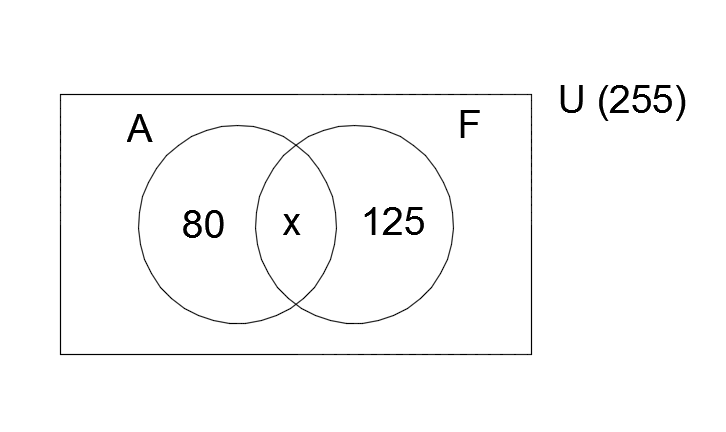
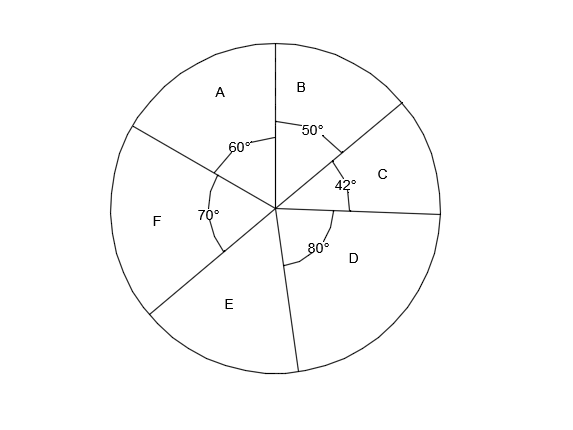
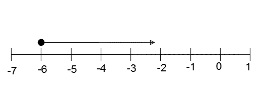
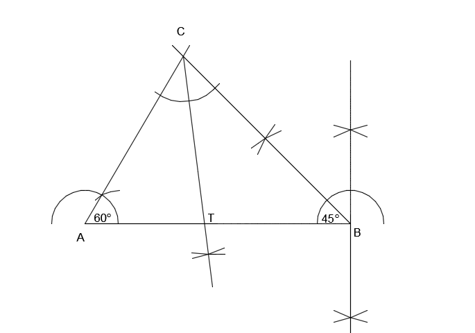
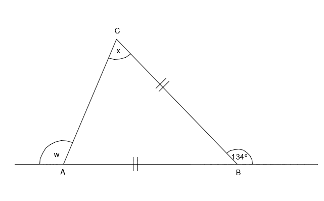
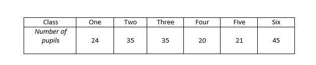
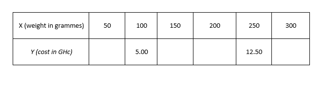
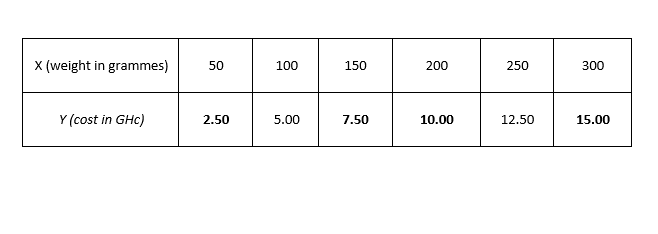

ESSAY TYPE QUESTIONS (2011)
a. In a school of 255 students, 80 of them study Arabic only and 125 study French only. Each student studies least one of the two subjects.
i. Draw a Venn diagram to represent the information.
ii. How many students study
\(\alpha . \) both subjects?
\(\beta . \) French?
b.Make h the subject of \( v = \dfrac{1}{3} \pi {r}^2 h \)
c. A bookseller bought 80 copies of books at GHc 3.50 per copy. He sold each of them at GHc 4.20. Find
i. the total cost price.
ii. his percentage profit.
a. i. Let U = {Students in the school}
\( \Rightarrow \text{n(U) = 255} \)
Let A = {Students who study Arabic}
Let F = {Students who study French}
Let x = {Students who study both Arabic and French}

ii. From the Venn diagram,
\( \alpha. \) 80 + x + 125 = 255
x = 255 - 205
x = 50
\( \Rightarrow \) 50 students study both Arabic and French.
\( \beta. \) F = x + 125 = 50 + 125 = 175
\( \Rightarrow \) 175 students study French.
b. \( v = \dfrac{1}{3} \pi r^{2} h \)
\( 3v = \pi r^{2} h \)
\( h = \dfrac{3v}{\pi r^{2}} \)
c. i. Cost Price = \( 80 \times 3.50 \) = GHc 280.00
ii. Percentage Profit = \( \dfrac{\text{Profit}}{\text{Cost price}} \)
Selling price = \( 80 \times 4.20 \) = GHc 336.00
Profit = 336 - 280 = GHc 56.00
Percentage profit = \( \dfrac{56}{336} = 20\%
\)
a. The pie chart below shows the distribution of exercise books to six schools A, B, C, D, E, and F in a town. School D was given 8,000 exercise books.

i. How many exercise books were given to each of the rest of the schools?
ii. What is the average number of exercise books given to the schools?
iii. How many schools had less than the average number of exercise books?
b. Solve the inequality below and illustrate the answer on the number line.
\( \dfrac{1}{3}x + 1 \geq \dfrac{1}{2}x + \dfrac{1}{4}(2 - x) \)
a. Let the total number of exercise books be x
\( \Rightarrow \dfrac{80x}{360} = 8000 \)
\( \Rightarrow x = \dfrac{8000}{8} \times 36 = 36000 \)
Total number o exercise books given to the schools is 36, 000.
Angle representing school E
= 360 - (60 + 50 + 42 + 80 + 70)
= \( 58 ^{\circ} \)
Books given to A = \( \dfrac{60}{360} \times 36000 = 6000 \)
Books given to B = \( \dfrac{50}{360} \times 36000 = 5000 \)
Books given to C = \( \dfrac{42}{360} \times 36000 = 4200 \)
Books given to E = \( \dfrac{58}{360} \times 36000 = 5800 \)
Books given to F = \( \dfrac{70}{360} \times 36000 = 7000 \)
Total number of books given to the rest of the schools
= 6000 + 5000 + 4200 + 5800 + 7000 = 28 000
ii. Average number of exercise books given to the schools
= \( \dfrac{36000}{6} = 6000 \)
iii. Schools B, C and E had less than the average number of exercise books.
\( \Rightarrow \) Three schools had less than the average number of exercise books.
b.
\( \dfrac{1}{3}x + 1 \geq \dfrac{1}{2}x + \dfrac{1}{4}(2 - x) \)
\( 12 \times \dfrac{1}{3}x + 1 \times 12 \geq \dfrac{1}{2}x \times 12 + 12 \times \dfrac{1}{4}(2 - x) \)
\( \Rightarrow 4x + 12 \geq 6x + 3(2 - x) \)
\( \Rightarrow 4x + 12 \geq 6x + 6 - 3x \)
\( \Rightarrow 4x - 3x \geq 6 - 12 \)
\( \Rightarrow x \geq -6 \)

a. Using a ruler and a pair of compasses only , construct
i. triangle ABC such that |AB| = 8 cm, angle CBA = 45 \(^{\circ} \) and angle CAB = 60 \(^{\circ} \).
ii. the bisector of angle ACB to meet |AB| at T.
b. Measure
i. |CT|;
ii. angle CTB
c. A boy spent \(\dfrac{3}{8} \) of his money and had GHc 15.00 left. How much did he have?

b. i. |CT| = 5.0 cm
ii. Angle CTB = 97\( ^{\circ} \)
c. Fraction of money left = \( 1 - \dfrac{3}{8} = \dfrac{5}{8} \)
\( \Rightarrow \dfrac{5}{8}x = 15 \)
\( \Rightarrow x = \dfrac{8}{5} \times 15 = \) GHc 24.00
a. The perimeter of a rectangle plot of land whose length is \((2x + 5) \) m and width \((x -10)\) m is 80 m. Find the
i. value of x;
ii. area of the plot;
iii. cost of weeding the plot at GHc 0.24 per \(m^2\).
b. Find the value of x and w in the diagram below if |AB| = |BC|. 
a.
i. \( \text{ Length = L = } (2x + 5)\) m
ii.\( \text{ Width = W = }(x - 10)\) m
\(\text{ Perimeter = } 2L + 2W = 80\)
\(2(2x + 5) + 2(x - 10) = 80\)
\(4x + 10 + 2x -20 = 80\)
\(6x - 10 = 80\)
\( x = \dfrac{90}{6} = 15 \)
ii. \( \text{Length } = 2 \times 15 + 5 = 35 m \)
\( \text{Width } = 15 - 10 = 5 m \)
Area = Length x Width
\( 35 \times 5 = 175 m^{2} \)
iii. \( 175 \times 0.24 \) = GHc 42.00
\( x + x = 134 \) (sum of interior opposite angles)
\( \Rightarrow x = \dfrac{134}{2} = 67^{\circ} \)
\( w + x = 180 \) (angles on a straight line)
\( \Rightarrow w = 180 - 67 = 113 ^{\circ} \)
a. Given that \( a = \begin{pmatrix} -3 \\ 3 \end{pmatrix} \) and \( b = \begin{pmatrix} 4 \\ -6 \end{pmatrix} \). Calculate
i. \(\text{a + 2b;}\)
ii. \( \dfrac{1}{2} (2a - b) \)
b. The number of pupils in a primary school is given in the table below:

i. Find the number of pupils in the school.
ii. What is the mean number of pupils in a class?
iii. What percentage of pupils are in class six?
c. Convert \( 312_{five} \) to base ten numeral.
a.
i. \(\text{ a + 2b } = \begin{pmatrix} -3 \\ 3 \end{pmatrix} + 2 \begin{pmatrix} -4 \\ 6 \end{pmatrix} \)
\(= \begin{pmatrix} -3 + 8 \\ 3 -12 \end{pmatrix} \)
\(= \begin{pmatrix} 5 \\ -9 \end{pmatrix} \)
ii. \(\dfrac{1}{2} \text{ a + 2b } = \dfrac{1}{2} \begin{bmatrix} 2 \begin{pmatrix} -3 \\ 3 \end{pmatrix} - \begin{pmatrix} -4 \\ 6 \end{pmatrix} \end{bmatrix} \)
\(= \dfrac{1}{2} \begin{bmatrix} \begin{pmatrix} -6 - 4 \\ 6 + 6 \end{pmatrix} \end{bmatrix} \)
\(= \dfrac{1}{2} \begin{pmatrix} -10 \\ 12 \end{pmatrix} \)
\(= \begin{pmatrix} -5 \\ 6 \end{pmatrix} \)
b
i. Number of pupils in the school
= \( 24 + 35 + 35 + 20 + 21 + 45 = 180 \)
ii. Mean number of pupils in a class
= \( \dfrac{\text{Total number of pupils in the school}}{\text{Total number of classes}} \)
= \( \dfrac{180}{6} = 30 \)
iii. Percentage of pupils in class six
\( \dfrac{45}{180} \times 100 = 25\% \)
\( 312_{five} = 3 \times 5^2 + 1 \times 5^1 + 2 \times 5^0 \)
= \( 75 + 5 + 2 \)
= 82
a. Copy and complete the table for the relation \(y = \dfrac{x}{20} \), where \(\text{y}\) is the cost (in Ghana cedis) and \(\text{x} \) is the weight (in grammes) of rice sold in a market.

b i. On a graph sheet, draw two perpendicular axes OX and OY.
ii. Using a scale of 2 cm to 50 grammes on the x-axis and 2 cm to GHc 2.00 on the y-axis draw the graph of the relation \(y = \dfrac{x}{20} \).
c. Using the graph, find
i. the cost of 175 grammes of rice;
ii. the weight of rice that can be bought with GHc 14.00
a.
i.
\( \text{When } x = 50 \\ \Rightarrow y = \dfrac{50}{20} = 2.50 \\ \)
\( \text{When } x = 150 \\ \Rightarrow y = \dfrac{150}{20} = 7.50 \\ \)
\( \text{When } x = 200 \\ \Rightarrow y = \dfrac{200}{20} = 10.50 \\ \)
\( \text{When } x = 300 \\ \Rightarrow y = \dfrac{300}{20} = 15.00 \\ \)
The completed table is shown below:


From the graph,
i. the cost o 175 grammes of rice is GHc 8.80
ii. the weight of rice that can be bought with GHc 14.00 is 280 grammes.